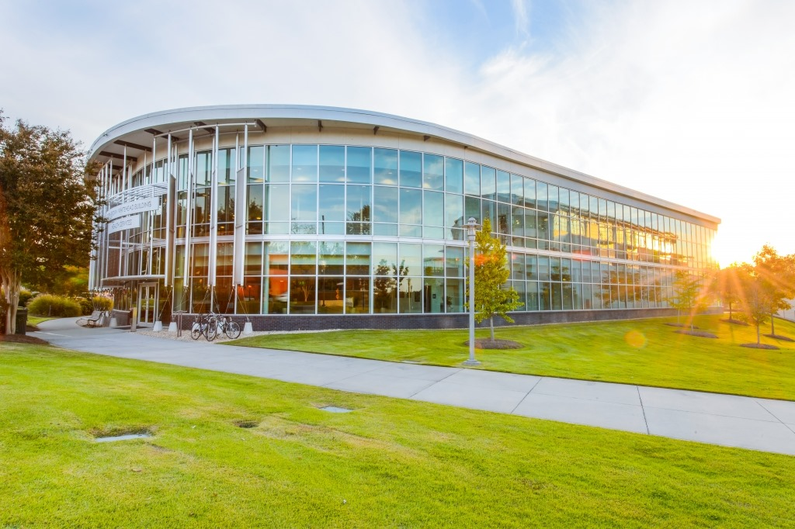

Building History
Student health and wellness services, and what they say about how campus care has changed.

The story supplied for this page traces the campus's need for health care to 1909, when a student died after adequate care was unavailable. In response, Georgia Tech established the Joseph B. Whitehead Hospital, completed in 1911.
A physician overseeing the hospital also maintained a private practice. He hired Edward Roe Stamps III, then an Emory medical student, to manage its day-to-day operations. The work that began in the hospital would grow into the student health and wellness services associated with Stamps today.
The 1911 Joseph B. Whitehead Hospital began as a response to a basic need: access to medical care for students. The supplied account describes a much larger operation today—40,000 square feet of Stamps Health Services, with the original Whitehead building at its center.
The submitted draft does not give dates for the facility's expansion or describe the renovations that produced its present form. Those details should be added when supporting records are available.
The story connects the facility's growth to student wellness: a small hospital operation became a larger health-services center. The supplied draft does not identify specific renovation projects, dates, architects, or changes in who could use its services, so those details remain open for further research.
Stamps's history is a story of campus care becoming more than a single hospital. Its continued place at the center of a larger health-services facility links an early response to student need with Georgia Tech's ongoing attention to student wellness.